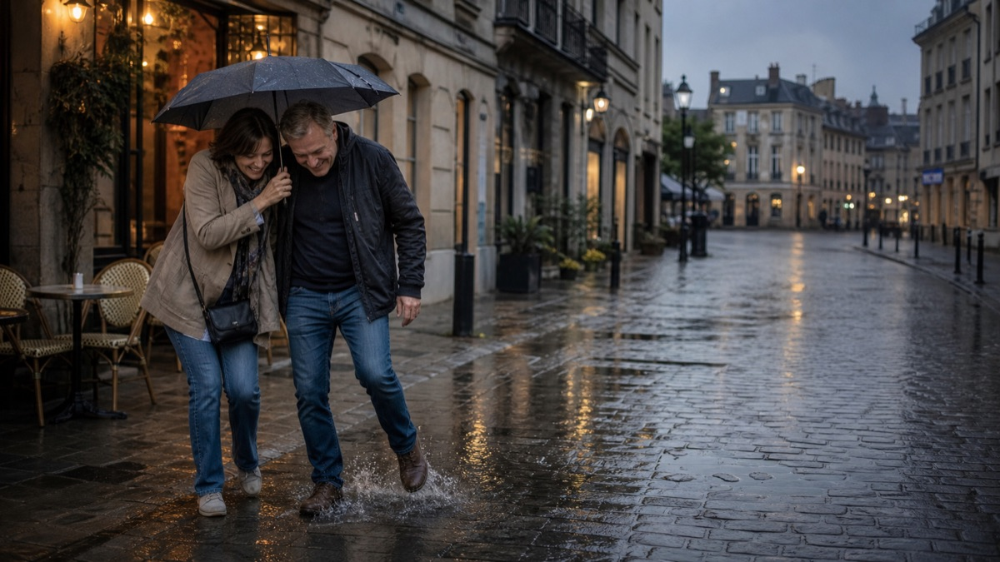

Momentro Guides · Desktop workflow
A calm desktop workflow for the clips you actually want to keep.
You do not need to become an editor because you came home with a lot of footage. You need a clear next step—and permission to leave the computer while it does the long part.

Start with a selected set, not every file you own
After a trip or a busy family season, footage is usually spread across phones, an action camera, a small camera, and maybe someone else’s shared folder. That is a lot of material to upload somewhere—or to watch end to end before you even begin.
Start smaller. Gather the clips that make you pause: the arrival, the person laughing, the train window, the quiet walk home. A selected set is not cheating. It is how a large, personal archive becomes a project you can finish.
Give the project one simple home on your computer
Put those selected clips in one project folder on the computer where you plan to work. Keep the originals where they already belong; this is not a demand to rebuild your entire archive or move a huge library into the cloud first.
Names can be imperfect. You do not need a flawless folder system before the first draft exists.
Start analysis, then go and live your evening
Analysis of a larger set takes real computer time. How long it takes depends on the footage and your machine. That part should not become an evening spent staring at a progress bar.
In Momentro, start the analysis on your desktop, then make dinner, answer a message, take the dog out, or simply leave the desk. Your computer keeps working on the selected clips while you do something else.
This is not an instant-finish promise. It is a way to give the computer work that does not need your attention every minute.
Come back for the part only you can decide
When the draft is ready, review it as a viewer. Does the beginning feel like the trip? Is there one clip you would rather hold a little longer? Is a quiet moment missing?
Make one small change if you want one. The review is where the film becomes yours; it is not a test you have to pass.
Export after the review—not before it
Once the sequence feels right, start the export and let the computer finish that job too. You can make a version for a family watch, a travel memory, or simply for your own archive.
The useful rhythm is simple: select, start, step away, review, make a small change if needed, and export. It gives a big collection a finish line without asking you to turn into a full-time editor.
A first-project checklist
- Pick one trip, season, or family event—not your whole lifetime archive.
- Gather the clips you would miss if they disappeared from view.
- Start the desktop analysis and do something else while it runs.
- Review the draft with fresh eyes.
- Make a small change if it helps, then export.
Start with the clips already waiting for you.
Momentro helps you turn selected family and travel clips into a draft you can review and export on your computer.